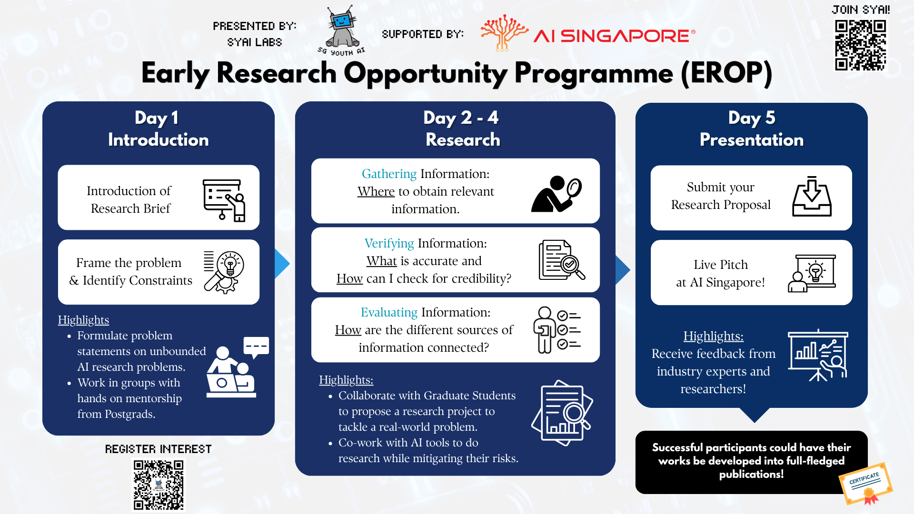
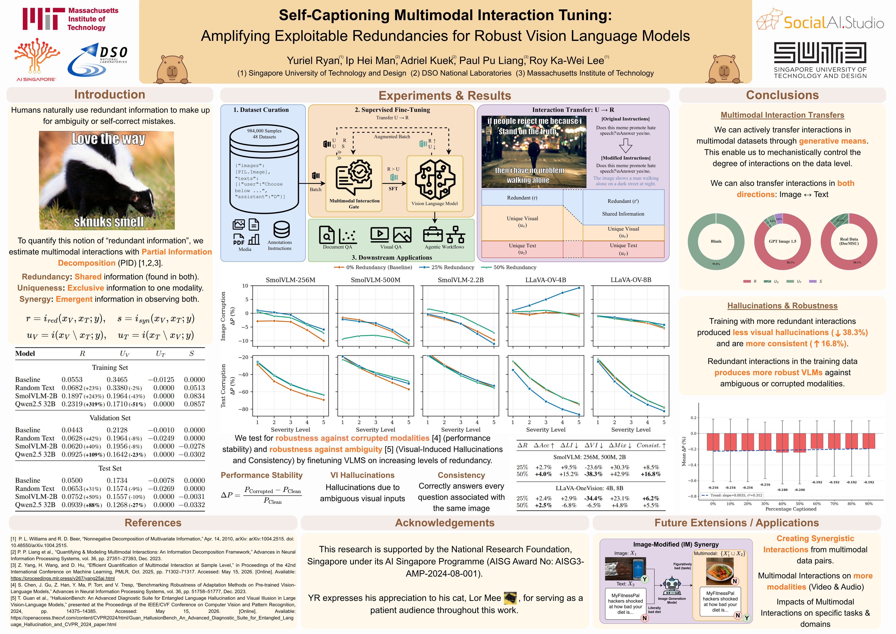
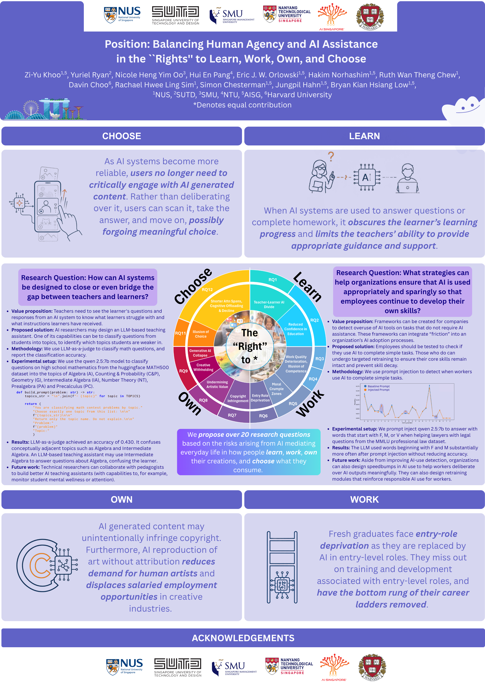

Day 4 — Writing Day
[to be updated]
Day 4 is the team’s writing day. The morning belongs to the mentees: three hours without mentors in the room to turn the week’s outline, literature and plan into a full draft of the proposal and a finished poster. In the afternoon the mentors come back to read what the team has written and help it tighten the story before tomorrow’s presentation.
Schedule
All sessions are at NUS Innovation 4.0.
| Slot | Activity | Location |
|---|---|---|
| 3 hr | Mentees write by themselves | Lecture hall |
| 2 hr | Research project: mentor consultation | Tutorial room |
Deliverable: finish the poster.
Daily Recap
Before writing anything, check whether the original problem statement still holds up after three days of reading. The literature might have already answered the initial RQs, or it might point to a different direction that is more exciting. In either case, considering a pivot at this point is a good research instinct and does not mean the project has failed. Good researchers update their beliefs as evidence comes in, and getting comfortable with that is a big part of learning to take risks.
We started with “can we detect health misinformation in Singlish?” Day 3’s reading turned up several strong detection models that already handle code-mixed text — but none of them report whether their explanations stay faithful when the input is code-mixed. So we pivot from building a detector to evaluating explanation faithfulness on code-mixed input. Narrower, less crowded, and more clearly a contribution.
Writing by Yourselves
For the first three hours, the mentors are not in the room. This is on purpose. It is the “You Do” part of the week, and the team decides for itself what goes in and what gets cut. Write down any questions you get stuck on and bring them to the afternoon session.
Roles
Before writing, the team decides who does what: who drafts which section, who builds the poster, and who reviews for consistency. Agreeing early on what “done” looks like helps avoid a last-minute scramble.
| Role | Responsibility |
|---|---|
| Section leads | Each owns one part of the proposal (problem / literature / direction / outcomes) |
| Poster lead | Builds the Canva poster from the proposal as sections firm up |
| Reviewer | Reads for coherence, checks citations against the verified bibliography |
Drafting the Proposal
The proposal (max 3 pages) pulls together everything from the week: the brief context, the verified literature, the research questions, and the experimental plan. With only three pages, every paragraph and diagram should add something to the proposal. The structure and the page budget are on Day 2. Keep them open while you write.
We compiled writing advice on this page. Check it if you need references or help.
Following your Day 2 outline and the page budget, draft the full proposal in your Overleaf project. Have your reviewer check that every literature claim maps to a verified source, and that each paragraph opens with its point.
Finishing the Poster
The layout from Day 3 gives the poster its five blocks. A finished poster has every block filled, one central figure that carries the method, text a passer-by can read in about a minute, and citations that match the ones in the proposal.
A few finished examples are shown below.



Fill in every block of your poster from the current draft of the proposal. Then stand back from the screen and give it the one-minute test: can someone who has never seen your project say what the problem, the gap and the contribution are?
Research Project: Mentor Review
In the afternoon, the mentors read the draft and the poster. They check that every literature claim maps to a verified source, that the research questions, the plan and the expected outcomes tell one consistent story, and that the poster says the same thing as the proposal. To close the session, the team rehearses a two-minute pitch once in front of its mentor, using the poster.
Checkpoint Deliverable: Day 4
At the end of Day 4, the mentees should have a finished poster and a complete draft of the research proposal, ready for tomorrow’s presentation.